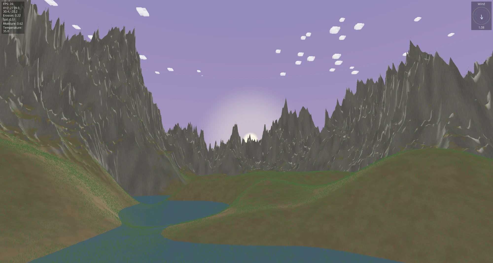
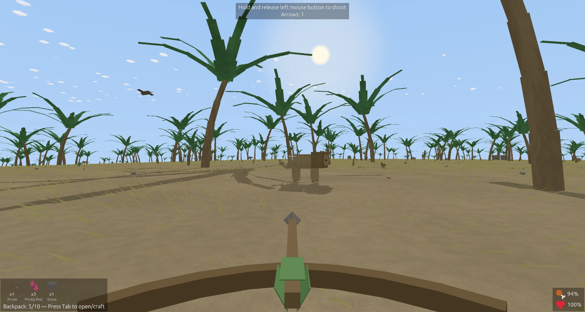

Tap Out
A first-person survival game about starting with nothing but two hands, a stretch of wild land, and whatever's willing to be hunted or foraged — built from scratch in Rust, on a custom engine written for it.
Play the latest build on itch.io ↗What it's about
You gather sticks, stones, and fiber off the ground, craft a bow, start a fire with a hand drill, and hunt or forage to keep your health and hunger up. A fiber backpack — ten slots, always worn — holds everything you pick up; a craft menu (Tab) turns raw materials into tools, and a basket you build yourself lets you carry more in bulk.
The world runs on a continuous climate simulation rather than fixed biomes — erosion, soil, moisture, and temperature all drive what grows where, so cacti and prickly pears turn up on warm dry ground, mushrooms on cold ground, and berries in between. Before stepping into a world, a preview screen lets you see and tune the noise maps that will shape its oceans and mountains.
Wildlife spans a real ecosystem rather than a couple of test animals: deer, boar, bovine, bear, wolf, wolverine, hyena, elephant, giraffe, rhino, hippo, mountain goat, ostrich, eagle, grouse, guinea fowl, squirrel, mouse, lizard, snake, fish, and shark, each with their own movement and behavior.
How it's built
The whole thing is three Rust crates: a small rendering engine (engine) built directly on wgpu, the game itself (game), and a world-generation editor (editor) for previewing and tuning terrain before it's played. No off-the-shelf game engine — camera, collision, shadows, water, grass, sky, and audio all hand-written against the GPU.
Screenshots
More coming as the game develops.

